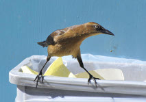
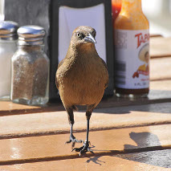
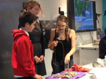

© NY Times
The grackle's secret to success
Watch the video and read the story

© Adam Lewis
Female great-tailed grackle foraging from a garbage can in Santa Barbara
© Markus Port
Giving a talk at ISBE, Perth, Australia, 2010

© Adam Lewis
Female great-tailed grackle scrounging at a cafe in Santa Barbara
© Ira G. Federspiel
Jackdaws contact sitting
© Corina Logan
Juvenile coatis playing at La Selva Biological Station, Costa Rica, 2004
© Sonia Fernandez
Female great-tailed grackle at the Santa Barbara Zoo
© Corina Logan
Great-tailed grackle skulls on a CT scanner bed
© Corina Logan
Red deer skull in the UK
© Corina Logan
Female great-tailed grackle on palm
© Corina Logan
Male great-tailed grackle eating next to a sign that says "Do not feed the birds"
© Orquidea Real
Future of Zoology talk at the Department of Zoology’s 150th Anniversary at the University of Cambridge
© Orquidea Real
Panelist in the Just a marmot science game show at the Department of Zoology’s 150th Anniversary at the University of Cambridge
© Claudia Wascher
Teaching an undergraduate lab practical on measuring brain size at Anglia Ruskin University in Cambridge
© The Naked Scientists
Researchers representing their animals in the Amazing Animals contest hosted by The Naked Scientists

© The Naked Scientists
A brave volunteer attempts to solve the water tube test in the Amazing Animals show hosted by The Naked Scientists
|
|
My research has advanced our understanding of behavioral flexibility, linking behavior to environmental change, cognition, and success in human modified environments through a comparative and global framework. Through an innovative set of experiments, I discovered that I can manipulate flexibility in great-tailed grackles (an urban bird species), which makes them more innovative and more flexible in a new context. Through a unique reproducible research program that I founded in 2022 (ManyIndividuals), collaborators and I are implementing this flexibility manipulation in a “Rethinking Animal Behavior” frame in species that are successful in human modified environments (grackles and blue jays) and in endangered species (Florida scrub-jays and toutouwai) to determine whether an increase in flexibility improves their success in human modified environments. This program has the potential to provide large impacts for threatened and endangered species who struggle with adapting to human modified environments. Results from this program will provide more evidence about whether flexibility was likely a key trait involved with rapid and repeated range expansions in past and present human populations.
REGISTERED REPORTS that received In Principle Acceptance (peer reviewed) (* = undergraduate co-author)
- How to succeed in human modified environments
Logan CJ, Shaw R, Lukas D, McCune KB. 2022
In principle acceptance by PCI Registered Reports on 8 Sep 2022 of the version on 25 Aug 2022
- Implementing a rapid geographic range expansion - the role of behavior and habitat changes
Logan CJ, McCune KB, Chen N, Lukas D. 2021
In principle acceptance by PCI Ecology of the version on 16 Dec 2021
Resulting articles: habitat use, great-tailed grackle behavior, great-tailed grackle dispersal, boat-tailed grackle behavior
- Does great-tailed grackle space use behavior reflect individual differences in exploration?
McCune KB, Folsom M, Ross C, Bergeron L, Logan CJ. 2020
In principle acceptance by PCI Ecology of the version on 23 Sep 2020
- Repeated parental care by adult male great-tailed grackles and its association with hormones, fitness, specific populations, and mating strategies
Folsom MA, MacPherson M, Lukas D, McCune KB, Bergeron L, Bond A, Blackwell A, Rowney C, Logan CJ. 2020
In principle acceptance by PCI Ecology of the version on 15 Jun 2020
- Investigating the use of of learning mechanisms in a species that is rapidly expanding its geographic range
McCune KB, McElreath R, Logan CJ. 2019
In principle acceptance by PCI Ecology of the version on 26 Mar 2019
- Is behavioral flexibility related to foraging and social behavior in a rapidly expanding species?
Logan CJ, Lukas D, Bergeron L, Folsom M, McCune KB. 2019
In principle acceptance by PCI Ecology of the version on 6 Aug 2019
- Is behavioral flexibility manipulatable and, if so, does it improve flexibility and problem solving in a new context?
Logan CJ, MacPherson M, Rowney C, Bergeron L, Seitz B, Blaisdell A, Folsom M, Johnson- Ulrich Z, Sevchik A, McCune KB. 2019
In principle acceptance by PCI Ecology of the version on 26 Mar 2019
Resulting articles: flexibility is manipulable, flexibility is repeatable, post-hoc analyses to develop the flexibility model
- Is behavioral flexibility linked with exploration, but not boldness, persistence, or motor diversity?
McCune K, MacPherson M, Rowney C, Bergeron L, Folsom M, Deffner D, Logan CJ. 2019
In principle acceptance by PCI Ecology of the version on 27 Mar 2019
- Validating morphological condition indices and their relationship with reproductive success in great-tailed grackles
*Berens JM, Logan CJ, Folsom M, Bergeron L, McCune KB.
In Principle Acceptance by PCI Ecology of the version on 8 Nov 2019
PUBLICATIONS (* = undergraduate co-author, § = started as a registered report, + = in peer review)
- §+ Behavioral flexibility is manipulable and it improves flexibility and innovativeness in a new context: post-hoc analyses of the components of behavioral flexibility
Lukas D, McCune KB, Blaisdell AP, Johnson-Ulrich Z, MacPherson M, Seitz BM, *Sevchik A, Logan CJ. 2022. doi:10.32942/osf.io/4ycps
Preprint is in post-study peer review at Peer Community In Ecology.
Preregistration received in principle acceptance by Peer Community in Ecology on 26 Mar 2019: pre-study peer review history and recommendation
Data - Reproducible manuscript (includes code)
- § Implementing a rapid geographic range expansion - the role of behavior changes
Logan CJ, McCune KB, LeGrande-Rolls C, Marfori Z, Hubbard J, Lukas D. 2023. doi:10.24072/pcjournal.320
Version 3 of this preprint has been peer-reviewed and recommended by Peer Community In Ecology.
Preregistration, pre- and post-study peer review history and recommendations
Data - Reproducible manuscript (includes code)
- § Using repeatability of performance within and across contexts to validate measures of behavioral flexibility
McCune KB, Blaisdell AP, Johnson-Ulrich Z, Lukas D, MacPherson M, Seitz BM, *Sevchik A, Logan CJ. 2023. doi:10.7717/peerj.15773
Version 5 of this preprint has been peer-reviewed and recommended by Peer Community In Ecology.
Preregistration, pre- and post-study peer reviews and recommendations
Data - Reproducible manuscript (includes code)
- § Behavioral flexibility is manipulable and it improves flexibility and innovativeness in a new context
Logan CJ, Lukas D, Blaisdell AP, Johnson-Ulrich Z, MacPherson M, Seitz BM, Sevchik A, McCune KB. 2023. doi:10.24072/pcjournal.284
Version 5 of this preprint has been peer-reviewed and recommended by Peer Community In Ecology.
Preregistration, pre- and post-study peer reviews and recommendations
Data - Reproducible manuscript (includes code)
- § The role of climate change and niche shifts in divergent range dynamics of a sister-species pair
Summers J, Lukas D, Logan CJ, Chen N. 2022. doi: 10.24072/pcjournal.248
Version 3 of this preprint has been peer-reviewed and recommended by Peer Community In Ecology.
Preregistration, pre- and post-study peer reviews and recommendations
Data links - code
- Great-tailed grackles (Quiscalus mexicanus) as a tolerant host of avian malaria parasites
Pacheco MA, Ferreira FC, Logan CJ, McCune KB, MacPherson MP, Albino Miranda S, Santiago-Alarcon D, Escalante AA. 2022. doi: 10.1101/2022.04.25.489425
- § Do the more flexible individuals rely more on causal cognition? Observation versus intervention in casual inference in great-tailed grackles
Blaisdell AP, Seitz B, Rowney C, Folsom M, MacPherson M, Deffner D, Logan CJ. 2021. doi:10.24072/pcjournal.44
Version 5 of this preprint has been peer-reviewed and recommended by Peer Community In Ecology.
Preregistration, pre- and post- study peer reviews and recommendations
Data - Reproducible manuscript (includes code)
- § Are the more flexible individuals also better at inhibition?
Logan CJ, McCune K, MacPherson M, Johnson-Ulrich Z, Rowney C, Seitz B, Blaisdell A, Deffner D, Wascher CAF. 2021. doi:10.26451/abc.09.01.03.2022
Version 7 of this preprint has been peer-reviewed and recommended by Peer Community In Ecology.
Preregistration, pre- and post- study peer reviews and recommendations
Data - Reproducible manuscript (includes code)
- § Investigating sex differences in genetic diversity in great-tailed grackles in Tempe, Arizona to infer potential sex biases in dispersal
*Sevchik A, Logan CJ, McCune KB, Blackwell A, Rowney C, Lukas D. 2021
Version 5 of this preprint has been peer-reviewed and recommended by Peer Community In Ecology.
Preregistration was recommended by Peer Community in Ecology: pre- and post- study peer reviews and recommendations.
Data - Reproducible manuscript (includes code)
- Using touchscreen equipped operant chambers to study comparative cognition. Benefits, limitations, and advice
Seitz BM, McCune KB, MacPherson M, Bergeron LM, Blaisdell A, Logan CJ. 2021. Preprint - Data
- Beyond brain size: uncovering the neural correlates of behavioral and cognitive specialization
Logan CJ, Avin S, Boogert N, Buskell A, Cross FR, Currie A, Jelbert S, Lukas D, Mares R, Navarrete AF, Shigeno S, Montgomery SH. 2018. doi: 10/c594. Preprint
- We can shift academic culture through publishing choices [version 2; referees: 3 approved]
Logan CJ. 2017. doi: 10/gbxt6f. F1000 Prime recommended
- Is behavioural flexibility evidence of cognitive complexity? How evolution can inform comparative cognition
Mikhalevich I, Powell R, Logan CJ. 2017. doi: 10/c595.
- Endocranial volume is heritable and is associated with longevity and fitness in a wild mammal
Logan CJ, Kruuk L, Stanley R, Thompson A, Clutton-Brock TH. 2016. doi: 10/c596. Data + some R code
- Eurasian jays do not copy the choices of conspecifics, but they do show evidence of stimulus enhancement.
Miller R, Logan CJ, *Lister K, Clayton NS. 2016. doi: 10/c597. Preprint - Data + R code
- Behavioral flexibility in an invasive bird is independent of other behaviors
Logan CJ. 2016. doi: 10/c598. Preprint - Data + R code
- How far will a behaviourally flexible invasive bird go to innovate?
Logan CJ. 2016. doi: 10/c599. Data
- Behavioral flexibility and problem solving in an invasive bird
Logan CJ. 2016. doi: 10/c6bb. Preprint - Data + R code
- Western scrub-jays do not appear to attend to functionality in Aesop’s Fable experiments
Logan CJ, *Harvey B, Schlinger BA, Rensel M. 2016. doi: 10/c6bc. Preprint - Data
- How New Caledonian crows solve novel foraging problems and what it means for cumulative culture
Logan CJ, *Breen AJ, Taylor AH, Gray RD, Hoppitt WJE. 2016. doi: 10/f8dksw ESM1 - ESM2 - Data
- Can endocranial volume be estimated accurately from external skull measurements in great-tailed grackles (Quiscalus mexicanus)?
Logan CJ, *Palmstrom CR. 2015. doi: 10/c6bd. Preprint - Data
- Modifications to the Aesop’s Fable paradigm change performances in New Caledonian crows
Logan CJ, Jelbert SA, *Breen AJ, Gray RD, Taylor AH. 2014. doi: 10/f6jkbw. Data is in Supporting Information
- Making progress in non-human mental time travel
Logan CJ. 2014. doi: 10/c6bf.
- Do Nearctic migrant birds compete with residents at army ant raids? A geographic and seasonal analysis
O’Donnell S, Kumar A, Logan C. 2014. doi: 10/f6kb25.
- Junior scientists are sceptical of sceptics of open access
Carter AJ, Horrocks NPC, Huchard E, Logan CJ, Lukas D, MacLeod KJ, Marshall HH, Peck HL, Sanderson J, Sorensen M. 2014. doi: 10/c6bg.
- Validating methods for estimating endocranial volume in individual red deer (Cervus elaphus)
Logan CJ, Clutton-Brock TH. 2013. doi: 10/f4k7q6. Data
- Rook, but not jackdaw, post-conflict third-party affiliation reduces aggression for aggressors
Logan CJ, Ostojic Lj, Clayton NS. 2013. doi: 10/f4t463. Data, Data sheets on which stats were run
- Alternative behavioral measures of corvid post-conflict affiliation.
Logan CJ, Emery NJ, Clayton NS. 2013. doi: 10/f4jcct. Data
- Adult male coatis play with a band of juveniles
Logan CJ, Longino JT. 2013. doi: 10/f5cgzq.
- Specializations of birds that attend army ant raids: an ecological approach to cognitive and behavioral studies.
O’Donnell S, Logan C, Clayton NS. 2012. doi: 10/f4f4gf.
- A case of mental time travel in ant-following birds?
Logan CJ, O’Donnell S, Clayton NS. 2011. doi: 10/cpfdhk. BBC Nature AnimalWise OUP Blog
- Army ant raid attendance and bivouac-checking behavior by Neotropical montane forest birds
O’Donnell, S, Kumar, A, Logan, C. 2010. doi: 10/fb5b38.
- Bothrops asper (Terciopelo) scavenging behavior.
Logan, CJ, Montero, C. 2009. Herpetological Review 40(3):352.
- Social learning is central to innovation, in primates and beyond
Logan, CJ, Pepper, JW. 2007. doi: 10/ckrcc5.
PUBLICATIONS (not peer reviewed)
- Preprints help journalism, not hinder it.
Tennant J, Gatto L, Logan C. 2018. doi: 10/gd3xpr.
- Ingredients for understanding brain and behavioral evolution: ecology, phylogeny, and mechanism.
Montgomery S, Currie A, Lukas D, Boogert N, Buskell A, Cross F, Jelbert S, Avin S, Mares R, Navarrete Rodriguez A, Shigeno S, Logan CJ. 2018. doi: 10/c6bh.
- Scholarly Publishing, Freedom of Information and Academic Self-Determination: The UNAM-Elsevier Case.
Priego E, McKiernan E, Posada A, Hartley R, Rodriguez Ortega N, Fiormonte D, Gil A, Logan C, Pablo Alperin J, Mounce R, Eglen SJ, Miranda Trigueros E, Lawson S, Gatto L, Ramos A, Pérez N. 2017. doi: 10/c6bj
- Convergent minds: the evolution of cognitive complexity in nature.
Powell R, Mikhalevich I, Logan CJ, Clayton NS. 2017. doi: 10/c6bk.
PREREGISTRATIONS (not peer reviewed)
Note: preregistrations 1-3 were peer reviewed as part of the causal cognition preregistration peer review by Reviewer 1
- What are the costs and constraints of behavioral flexibility in great-tailed grackles?
Logan CJ, Rowney C, Bergeron L, McCune K, Bond A, Blackwell A, Escalante A, Pacheco M. 2018. (.Rmd version).
- How and why does behavioral flexibility vary across the range of a rapidly expanding species?
Logan CJ, Rowney C, Bergeron L, McCune K, Bond A, Blackwell A, Escalante A, Pacheco M. 2018. (.Rmd version).
- The genetics of behavioral flexibility across the range of a rapidly expanding species.
Logan CJ, Rowney C, Bergeron L, McCune K, Bond A, Blackwell A, Lukas D. 2018. (.Rmd version).
Preregistrations are study plans that are written before the data are collected (or before analyzing the data when using data that already exist). We get them peer reviewed before we conduct the study to ensure that we get the most out of the resources we invest by correcting any issues before they arise. Additionally, once a preregistration has passed pre-study peer review, it is almost guaranteed to be published upon a quick post-study peer review, which checks to make sure we did what we said we were going to do and if there were any deviations, that these deviations maintain the scientific validity of the work.
GRANTS
| 2022 |
Max Planck Digital Library
Funding for Peer Community in Registered Reports |
€5,000 |
| 2017 |
Shuttleworth Foundation Flash Grant
To fund the #BulliedIntoBadScience campaign |
$5,000 |
| 2016 |
Cambridge Graduate School of Life Sciences Researcher Development Grant
To fund two Exercise your interview skills workshops for PhD students and postdocs |
£1,250 (declined) |
| 2015 |
Cambridge Graduate School of Life Sciences Researcher Development Grant
Funded an Exercise your interview skills workshop for PhD students and postdocs |
£718 |
| 2015-2018 |
Leverhulme Early Career Fellowship / Newton Trust |
salary + research £123,000 |
| 2014 |
University of California Santa Barbara Open Access Pilot Fund Program
Covered publication fees for Logan et al. (2014) in PLoS ONE |
$1,350 |
| 2013-2014 |
National Geographic Society / Waitt Grant
Funded the field research on New Caledonian crows and great-tailed grackles |
$14,172 |
| 2012-2015 |
Junior Research Fellowship, SAGE Center for the Study of the Mind, UCSB |
salary + research $144,000 |
| 2010-2011 |
Cambridge Philosophical Society Travel Grants (conferences) |
£685 |
| 2009-2011 |
Gates Cambridge Trust Research Grants (conferences) |
£2,111 |
| 2009-2011 |
Murray Edwards College Research and Travel Grants (conferences) |
£895 |
| 2008-2011 |
Gates Cambridge Scholarship (50 awarded out of 600 applicants)
Funded my PhD fees, living costs, and stipend at the University of Cambridge |
£75,000 |
| 2008-2011 |
Murray Edwards College International Bursary |
£3,000 |
| 2004 |
Youth Activity Grant, The Explorers Club (undergrad research) |
$1,050 |
| 2003-2004 |
Foundation Activity Grants, The Evergreen State College |
$353 |
AWARDS
| 2016-2018 |
Post-doctoral Bye Fellow, Murray Edwards College, University of Cambridge |
|
| 2016 |
Learning & Behavior Best Article Award |
$1,000 |
| 2014-2016 |
Elected to the Excellence in Science Program,
American Association for the Advancement of Science |
|
| 2011 |
Best Talk (out of 12), Murray Edwards College Graduate Symposium |
£50 |
| 2009 |
Science Writing Prize, Association for the Study of Animal Behaviour & New Scientist |
£1,000 |
| 2009 |
2nd prize Best Student Talk (out of 50), International Ethological Congress |
£40 |
| 2007 & 2008 |
NSF Graduate Research Fellowship Program Honorable Mention |
|
| 2003-2004 |
K.E.Y. Student Services Award, The Evergreen State College |
$3,750 |
| 2002-2003 |
Academic Achievement Award, The Evergreen State College |
$900 |
| 2002 |
Intern of the Year, Northwest Ecosystem Alliance |
|
| 2002 |
Graduated with high honors and the President’s Medal (top 1.8%), grades (GPA): 3.91/4.00,
Skagit Valley College |
|
| 2001-2003 |
Phi Theta Kappa Honor Society Member |
|
| 2001-2002 |
Drama Department Award, Skagit Valley College |
|
| 2000-2001 |
Ann Richards Scholarship, Skagit Valley College |
$300 |
| 2000-2001 |
Clark Scholarship, Skagit Valley College |
$900 |
| 2000-2001 |
National Dean’s List |
|
| 1999-2000 |
Drama Student of the Year, Skagit Valley College |
|
| 1998 |
AmeriCorps Education Award |
$4,725 |
PRESS COVERAGE & PUBLIC ENGAGEMENT
2020
- Mentor for an Online Networking Event at Murray Edwards College, University of Cambridge (Jan)
2019
- Grackle 411: What the Aztecs thought about the bird Austinites love to hate, Austin American-Statesman (Jul)
- Mentor for an Online Networking Event at Murray Edwards College, University of Cambridge (Jan)
2014
- Are crows smarter than a first-grader? UCSB news release
- Are crows smarter than children? National Geographic Weird & Wild
- NewsTalk radio interviews on crow research: Futureproof (26 July, starts at 25:20) and Moncrieff show (29 July, starts at 36:52)
- I'm quoted in MacLean's Don't call them bird brains
- How birds learn about and solve foraging problems. Talk at the Sedgwick Reserve, Santa Ynez (Dec)
- How New Caledonian crows learn about and solve foraging problems. Talk at the Audubon Society, Santa Barbara (Oct)
- Santa Barbara Zoo talks: Why study bird cognition?, Social cognition in birds, Physical cognition in birds
2010
- Does social support reduce stress in corvids? Talk at the Global Scholars Symposium, University of Cambridge (Jun)
- What corvids do after a fight. Talk at the Murray Edwards College Graduate Symposium, University of Cambridge (Apr)
2009
- Social support in corvids. Talk at the Gates Scholars Symposium, University of Cambridge (Sep)
- The evolution and ontogeny of post-conflict third-party affiliation in corvids. Talk at the Keio-Cambridge Symposium, University of Cambridge (Aug)
POPULAR SCIENCE ARTICLES
- Logan CJ. 2013. Life in the Field: New Caledonian crow cognition research. National Geographic Explorers Journal video blog
- Who are you calling a bird brain?
- Life in the field
- Footage from the field: Insect tent-mates and flowers you can high five
- A day in the life of a crow researcher in New Caledonia
- Bird watch, cat walk: an in-the-field fashion show
- On the hunt for nut cracking crows
- Logan CJ, Emery NJ, Clayton NS. 2011. Squabbles and snuggles: how corvids handle conflict. Natural History Magazine, June, pp. 18-19.
CONFERENCE POSTERS
- Endocranial volume is heritable and associated with fitness in deer. International Society for Behavioral Ecology, Exeter, Aug 2016
- Investigating New Caledonian crow causal cognition using water displacement experiments. International Society for Behavioral Ecology, NY, Aug 2014
- Are small brains capable of sophisticated cognition? Summer Institute on Bounded Rationality, Max Planck Institute for Human Development, Berlin, Jul 2012.
- Behavioural contagion in rooks and jackdaws. Association for the Study of Animal Behaviour, London, Dec 2010.
- Behavioural contagion in rooks and jackdaws. Learning, decision making and evolutionary theory: can we bridge the gap? An international workshop of the Israel Science Foundation, Kfar Blum, Israel, Nov 2010.
INVITED TALKS
- How Peer Community in Registered Reports lets researchers take back control of the publishing process. Symposium: Progress & future directions in open science, Brighton, UK, Jul 2023 [Video]
- Do species in human modified environments have to be flexible? International remote seminar on Frontiers in Social Evolution, May 2022 [Video]
- How Peer Community in Registered Reports lets researchers take back control over the publishing process. Reproducible Research Oxford, UK, Jun 2021 [Slides and video]
- Behavioral flexibility in a rapidly expanding species.
Department of Animal Ecology, University of Potsdam, Germany, Feb 2021
- Understanding urban history from an ecological perspective.
Coffee with Scientists, Department of History and Philosophy of Science, University of Cambridge, Nov 2020
- How to improve the value of your research by making it verifiable.
eScience Institute, University of Washington, Aug 2019 [Slides]
- How to improve the value of your research. Open Science Kick-off, Max Planck Institute for Human Cognitive and Brain Sciences, Leipzig, Germany, May 2019 (Keynote) [Slides]
- Behavioral flexibility in a rapidly expanding species. Department of Zoology, Charles University, Prague, Czech Republic, Mar 2019
- Research careers in a rapidly changing academic environment. Todos Seminar, The Arctic University of Norway, Tromso, Norway, Nov 2018 [Slides] [Video]
- I won't be bullied into bad science. Munin Conference, Tromso, Norway, Nov 2018 (Keynote) [Slides] [Video]
- Behavioral flexibility in a rapidly expanding species. Department of Biology, University of New Mexico, Nov 2018
- Behavioral flexibility in a rapidly expanding species. Department of Biology, New Mexico State University, Nov 2018
- How publishing peer review histories alongside articles promotes ethical publishing practices. Joint Statistical Meetings, Vancouver, BC, Aug 2018 (Symposium Speaker) [Slides]
- What is behavioral flexibility and is it a mechanism for surviving in new environments? Evolution of Social Complexity Colloquium, Arizona State University, Nov 2017
- The walls of my invisible box. The Pivot Point event on how to change academic culture. University of Cambridge Graduate Union, Jun 2017 [Event] [Slides]
- How to make your voice heard. eLife #ECRWednesday webinar, May 2017 [Video]
- Behavioral flexibility and brain size in birds. Archbold Research Station, Florida, Apr 2017
- Open peer review: what is it and what does it achieve? How to get the most out of modern peer review, Office of Scholarly Communications, University of Cambridge, Mar 2017 [Video] [Slides]
- How the Elsevier Big Deal sparked a rampage at Cambridge. Department of Zoology Seminar Day, University of Cambridge, Mar 2017 [Slides]
- Behavioral flexibility in invasive species. Department of Human Behavior, Ecology and Culture, Max Planck Institute for Evolutionary Anthropology, Feb 2017
- On campus action to organize against big deals. OpenCon Community Call, Jan 2017 [Notes]
- The costs and benefits of a large brain in birds and mammals. Ecology and Evolution Seminar Series, University of York, Jan 2017
- Behavioral flexibility and brain size in birds and mammals. Technologies and Techniques Seminar Series, Anglia Ruskin University, Dec 2016
- Researchers are terrible business people. . .but we don't have to be. Zoology Postdoc Seminar Series, University of Cambridge, Jul 2016 [Slides]
- Merging behavioural ecology, evolution, and ecology to discover: why do brain sizes differ? Leverhulme Trust Board, London, Jun 2016
- Frustrations with exploitative publishers; open access solutions. Part of a discussion to develop an open research policy for the University of Cambridge. Office of Scholarly Communications, University of Cambridge, Jun 2016 [Slides] [Resulting report]
- Behavioral flexibility and problem solving in an invasive bird. Wolfson College Science Society, University of Cambridge, May 2016
- Behavioral flexibility and brain size in birds and mammals. Zoology, University of Stockholm, May 2016
- Endocranial volume is heritable and associated with fitness in a wild mammal. Departmental Seminar Day, Zoology, University of Cambridge, Feb 2016
- Brain size and neuron number in the context of comparative cognition. Centre National de la Recherche Scientifique, Brunoy, France, Feb 2016
- Behavioral flexibility in birds and beyond. History and Philosophy of Science, University of Cambridge, Nov 2015
- Behavioral flexibility in great-tailed grackles. Zoology, University of Cambridge, Oct 2015
- Behavioral flexibility is not predicted by innovation frequency or brain size in three bird species. School of Biology, University of St Andrews, Jul 2015
- How birds learn about and solve foraging problems. Center for Behavior, Evolution, and Culture, University of California Los Angeles, Feb 2015 [Video]
- How birds learn about and solve foraging problems. History and Philosophy of Science Department, Washington University, Dec 2014
- How birds learn about and solve foraging problems. Department of Psychology, University of Washington, Nov 2014
- How New Caledonian crows learn about and solve foraging problems. Santa Barbara City College, Sep 2014
- Causal cognition in New Caledonian crows. Hastings Natural History Reservation, May 2014
- Causal cognition in New Caledonian crows. Department of Psychological and Brain Sciences, University of California Santa Barbara, Mar & May 2014
- Physical and social cognition in two innovative bird species. Department of Integrative Biology and Physiology, University of California Los Angeles, Jan 2014
- Who are you calling a bird brain? Department of Psychology, University of Washington, Nov 2013
- Conflict management in crows and beyond. National Center for Ecological Analysis, University of California, Santa Barbara, Mar 2013
- Episodic-like memory in brown-headed cowbirds? Vertebrate Lab Journal Club, University of California Santa Barbara, Feb 2013
- What to do after a fight? Department of Psychological and Brain Sciences, University of California Santa Barbara, Oct 2012; Department of Ecology, Evolution and Marine Biology, Jan 2014
- Corvid post-conflict affiliation - AND - What influences brain size in red deer? Wild Evolution Group, University of Edinburgh, Edinburgh, UK, Apr 2012
- The sociality, ontogeny, and function of corvid post-conflict affiliation. Sub-Department of Animal Behaviour, University of Cambridge, Nov 2011
- How corvids support each other after fights. Department of Psychology, University of Washington, Jul 2011
- The sociality, ontogeny, and function of corvid postconflict affiliation. Institute of Biology, University of Neuchatel, Switzerland, Mar 2011
CONFERENCE PRESENTATIONS
- Logan CJ. The ManyIndividuals reproducible research program, 2023 Big Team Science Conference, online, Oct 2023
- Logan CJ. Plenary: How Peer Community in Registered Reports lets researchers take back control over the publishing process, Society for Open, Reliable, and Transparent Ecology and Evolutionary biology (SORTEE), online, July 2022 [Video online] [Video download] [Slides]
- Logan CJ. Is behavioural flexibility evidence of cognitive complexity? LeadNet, Berlin, Germany, 2018.
- Mikhalevich I, Powell R, Logan CJ. Is behavioural flexibility evidence of cognitive complexity? How evolution can inform comparative cognition. International Conference on Comparative Cognition, Melbourne Beach, Florida, 19-22 April 2017.
- Logan CJ. Behavioral flexibility in an invasive bird is independent of other behaviors. European Conference on Behavioural Biology, Vienna, 12-15 July 2016.
- Logan CJ. Are invasive species behaviorally flexible? Ethology, Gottingen, Germany, Feb 2016
- Logan CJ, Breen AJ, Taylor AH, Gray RD, Hoppitt WJE. How New Caledonian crows solve novel foraging problems and what it means for cumulative culture. Association for the Study of Animal Behaviour Winter Meeting, London, UK, 3-4 Dec 2015.
- Logan CJ. Does innovation frequency indicate complex cognition? Behaviour, Cairns, Australia, 9-14 Aug 2015.
- Logan CJ. Formalizing a broad post-conflict affiliation hypothesis. For the symposium I organized on Post-conflict affiliation: applications for conflict management in humans. International Ethological Congress, Newcastle, UK, 4-8 Aug 2013.
- Logan CJ, Emery, NJ, Clayton, NS. The sociality and ontogeny of corvid postconflict affiliation. International Ethological Congress / Animal Behavior Society, Bloomington, IN, USA, 25-31 Jul 2011.
- Logan CJ, Emery, NJ, Clayton, NS. Does social support reduce stress in corvids? International Society for Behavioral Ecology, Perth, Australia, 26 Sep-3 Oct 2010.
- Logan CJ, Emery, NJ, Clayton, NS. The evolution and ontogeny of postconflict third-party affiliation in corvids. International Ethological Congress, Rennes, France, 19-25 Aug 2009.
COMPARATIVE COGNITION LAB MEETING PRESENTATIONS
The sociality and ontogeny of postconflict affiliation in corvids (May 2011)
Does social support reduce stress in corvids? (Sep 2010)
Mental time travel in antbirds? (Dec 2009)
Coati play in Costa Rica (Jan 2009)
Corvid post-conflict affiliation (Aug 2009 & Jan 2010)
PUBLIC POSTERS
- What corvids do after a fight. University of Cambridge Science Festival, Mar 2010.
- What corvids do after a fight. University of Cambridge Science Festival, Department of Experimental Psychology Open Day, Mar 2010.
- Play behavior of Nasua narica (white-nosed coati) in Costa Rica. Murray Edwards College Graduate Symposium, University of Cambridge, Apr 2009.
- Play behavior of Nasua narica (white-nosed coati) in Costa Rica. University of Cambridge's 800th Anniversary Science Festival, Mar 2009.
OPEN RESEARCH MATERIALS
EXPERIENCE AND EDUCATION
| 2018-current |
Senior Researcher and Leader of the Comparative Behavioral Ecology group, Department of Human Behavior, Ecology and Culture, Max Planck Institute for Evolutionary Anthropology
Great-tailed grackles, a flexible bird species, have rapidly expanded their range into human modified environments across North America over the past 140 years. I showed that grackles in a recently established population on the edge of their range are more persistent and have a higher variance in flexibility compared with grackles in an older population away from the northern edge. I revealed that behavior is likely involved in facilitating this rapid range expansion
Discovered grackle behavioral flexibility is manipulable and improves flexibility in a new context, problem solving, and foraging behavior
Founded ManyIndividuals, a reproducible research program of a global network of researchers with field sites. We are investigating whether manipulating flexibility in successful and threatened species improves their success in human modified environments
Field work is challenging and the minimum sample sizes indicated by traditional power analyses are not feasible to achieve. I am therefore “Rethinking Animal Behavior” by innovating bespoke, hypothesis- and population-specific models that guide data collection and provide a template for others to follow. This allows researchers to get the most out of limited samples using non-invasive approaches.
Designed and implemented anti-racist/anti-sexist recruitment policies (e.g., candidates only interviewed if they are a good role model for groups that are traditionally underrepresented in STEM, recruit primarily through underrepresented minority platforms, use quotas to match racial composition of team to local area)
I aim for the tenant of the Max Planck Society that excellent research needs open science. I co-founded Peer Community in Registered Reports, dedicated to reviewing and recommending Registered Reports across the full spectrum of STEM, medicine, the social sciences, and humanities. It has become internationally renowned for being a unique platform that gives authors and editors power in the process of sharing research outputs
|
| 2015-current |
Research Associate, Dept. Psychological and Brain Sciences, then Neuroscience Research Institute, University of California Santa Barbara
Brought two awards to UCSB to fund postdocs and technicians on the grackle project
The grackle permits and ethics (IACUC protocol) are based at UCSB, which is where the project started
UCSB provides veterinary support for the grackles either directly (when the field site is in Santa Barbara) or through cooperation agreements with other universities (when the field site is located elsewhere)
|
| 2015-2018 |
Leverhulme Early Career Research Fellow, Department of Zoology, University of Cambridge
Conducted the first study on the heritability of endocranial volume (a brain size proxy) in the wild
Discovered that endocranial volume is highly heritable and does not influence lifetime breeding success in 1300 red deer
Results suggest that endocranial volume heritability estimates in non-natural conditions may be more similar to what occurs in the wild than previously thought
Designed and implemented anti-racist/anti-sexist policies for supporting students (e.g., evaluate individuals rather then looking for a 'good' CV which is more a sign of privilege than quality, female-code language in adverts, male-code language in letters of reference)
|
| 2012-2015 |
Junior Research Fellow, SAGE Center for the Study of the Mind, University of California Santa Barbara
Discovered that New Caledonian crows do not learn by imitating, therefore I suggested a new pathway for the evolution of cumulative technological culture
Conducted the first intelligence tests on great-tailed grackles, finding that, contrary to predictions, they are behaviorally flexible similar to crows despite their small relative brain size and lack of published foraging innovations
Results suggest that behavioral flexibility is not indicated by brain size or innovation and must be measured directly
|
| 2008-2012 |
PhD Experimental Psychology, University of Cambridge (with Prof Nicola Clayton)
Investigated the sociality, ontogeny, and function of corvid (birds in the crow family) postconflict affiliation, finding that even the least social species studied so far uses social support
Developed new methods to detect postconflict affiliation in strongly bonded individuals
|
| 2004-2008 |
Research Assistant, University of Washington, Stanford University, University of Arizona, Washington State Department of Natural Resources |
| 2002-2004 |
BS Biology, The Evergreen State College, USA (with Prof John Longino)
Discovered that adult male coatis play with juveniles rather than predate them, which makes them an excellent model for studying the mechanisms of infanticide
|
| 1999-2002 |
AA Degree in Biology and Drama, Skagit Valley College, USA |
TEACHING AND SUPERVISION
- Workshop: How to implement an open and transparent workflow. Max Planck Institute for Evolutionary Anthropology, 2019
- Designed and taught Neuroethology: The neural basis of adaptive behaviour for final year undergraduates in Zoology at Cambridge (3 lectures; 2016)
- Co-designed and taught graduate seminars in Psychological and Brain Sciences at UCSB: Interdisciplinary Approaches to Brains and Behavior (2013) and Behavioral science: are you doing it wrong? (2014). Course material was adapted to student interests throughout the term.
- Developed and delivered a writing workshop for final year students at Cambridge (2009 & 2011).
- Guest lecturer since 2012: Ethology and Behavioral Ecology (3 lectures - the main lecturer said that my lecture was the most popular in the course every year), Social Psychology of Close Relationships (1 lecture) at UCSB, and Methods in Field Biology (1 lab) and Seminars in Biology (1 lecture) at Santa Barbara City College.
- Committee member for 5 PhD students and 1 MS student in Germany, the UK, and US.
- External PhD thesis examiner: Univ. of Washington (McCune) and Univ. of Vienna (Ibáñez de Aldecoa).
- Supervised 54 undergraduate, 1 PhD student volunteer, and 4 high school research assistants in the US, UK, and Germany (since 2009), including 3 senior theses. Advised in how to give presentations, apply for grants and PhD programs, and on non-academic careers.
- Supervised ~40 undergraduates in Behaviour at Cambridge (2009 & 2011).
- Demonstrated lab practicals for ~500 undergraduates in Evolution and Behaviour and marked ~15% of their exams at Cambridge (2009-2011).
EDITOR
- Founder, on the Managing Board, and an Editor for Peer Community in Registered Reports (since 2021)
- Associate Editor for PeerJ (since 2021)
- On the Managing Board (2018-2022) and an Editor (since 2018) for Peer Community in Ecology - implemented peer reviews of preregistrations (study plans before data are collected)
- Editorial Board member for Animal Behavior & Cognition (2017-2020)
PEER REVIEWER
Note: Since 2017, I only review articles at 100% open access journals at ethical publishers where the peer review history will be published alongside the article.
Since 2011: performed 34 pre-publication reviews for 19 journals: Peer Community in Registered Reports (see my profile + 1 Stage 1 that is private until Stage 2), PeerJ (Harrison and Whiten 2018), eLife (Klump et al. 2021), Open Research Europe (Karhualahti et al 2023), Ethology (6), Behaviour (3), Royal Society Open Science (3), Biology Letters (2), The Quarterly Review of Biology (2), Animal Behaviour (2), PLOS ONE (2), Behavioural Processes (2), Frontiers in Psychology (Scarf et al. 2014), Proceedings of the Royal Society B (1), Philosophical Transactions of the Royal Society B (1), Current Zoology (1), Avian Research (1), Animal Cognition (1), Behavioral Ecology and Sociobiology (1), Behavioral Sciences (1), and for the International Ethological Congress 2013.
FUNDING APPLICATION EVALUATOR
- Canada Excellence Research Chairs (2023)
- Vienna Science and Technology Fund (WWTF; 2018 & 2021)
- La Caixa Postdoctoral Fellowships (2021)
LEADERSHIP
Organizer:
- Organized: A researcher-run solution to improving science and reducing reviewer burden: peer review of preprints and preregistrations at Peer Community In. Department of Human Behavior, Ecology and Culture, Max Planck Institute for Evolutionary Anthropology (2019)
- Co-organized a workshop with the Max Planck Digital Library: How are Max Planck researchers improving their research and scholarly publishing through open practices? Department of Human Behavior, Ecology and Culture, Max Planck Institute for Evolutionary Anthropology (2019)
- Ran a roundtable on Bursting the Academic Bubble where PhD students learned about a variety of career options. Department of Human Behavior, Ecology and Culture, Max Planck Institute for Evolutionary Anthropology (2018)
- Conducted a Workplace Culture survey and workshops in the Department of Zoology at Cambridge to contribute to the Collaborating with Men research project at Murray Edwards College (2018)
- Co-organized: Convergent Minds: The evolution of cognitive complexity in nature, special issue of Interface Focus (2017)
- Organized and led early career researcher workshop on Moving brain size forward (2017)
- Postdoc Research Convenor for Murray Edwards College (2017-2018)
- Member of Journals Coordination Scheme School of Biological Sciences Consultative Committee and serve as the School of Biological Sciences representative on the Journals Coordination Scheme Working Group at Cambridge (2017-2018)
- Department of Zoology Library Committee at Cambridge (2017-2018)
- Facilitating shift to ethical scientific publishing (since 2016)
- Member of OpenConCam (2016-2018), co-organized OpenCon Cambridge Nov 2016
- Implemented Cambridge-wide interview workshops based on theatre exercises for postgraduate and postdoc researchers (2015)
- Convened a Zoology networking group (2015-2016)
- Co-organized two SAGE Junior Research Fellow Workshops: Coordinating the study of social coordination (2014) and The human condition as a network of networks (2013)
- Launched Psychology Postdocs Happy Hour to network a disconnected community, Santa Barbara (2013-2015)
- Organized a conference symposium at Behaviour, Newcastle, UK (2013)
- Gates Cambridge Alumni Association Regional Coordinator (2013)
Mentor:
- Animal Behavior Collective (since 2022)
- Murray Edward College at the University of Cambridge (since 2016)
Invited participant:
- Max Planck Society Open Science Commission (2023)
- Workshop: The future of registered reports, Center for Open Science, London (2019)
- Workshop: Collaborating with men, Murray Edwards College, Cambridge (2016)
- Research data management focus group, Jisc (Joint Information Systems Committee) and the University of Cambridge (2016)
Invited discussant:
- Workshop: Research Ethics in Evolutionary Biological Sciences, Max Planck Institute for Evolutionary Anthropology (2019)
- Conference: New Directions in the Evolutionary Social Sciences, Centre for Research in the Arts, Social Sciences and Humanities, University of Cambridge (2016)
|
|